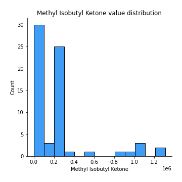
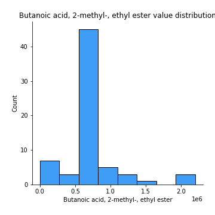
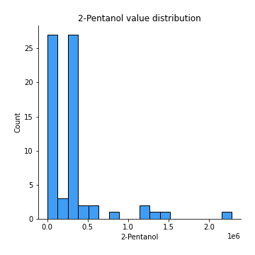
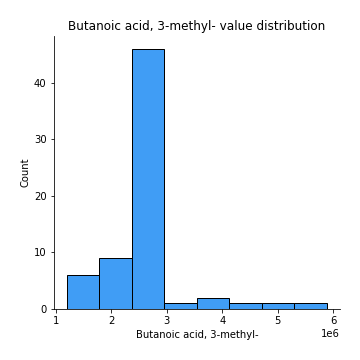
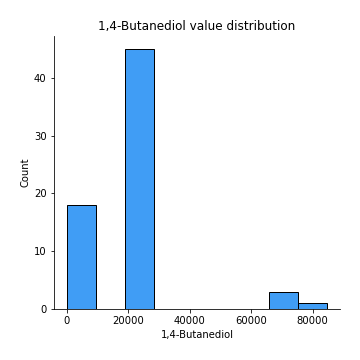
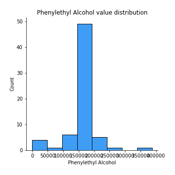
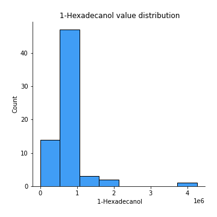

Exploratory Data Analysis¶
Feature : target¶
Feature type : discrete
Missing : 0.0%
Unique : 6
Count :67.0
Mean :2.462686567164179
Std :1.6360369541739832
Min :0.0
25%th Percentile : 1.0
50%th Percentile : 2.0
75%th Percentile : 4.0
Max :5.0
Feature : Ethyl Acetate¶
Feature type : continous
Missing : 0.0%
Unique : 40
Count :67.0
Mean :226933.94982916742
Std :292468.09074375225
Min :0.0
25%th Percentile : 0.0
50%th Percentile : 129833.0
75%th Percentile : 328084.0
Max :1077717.0
Feature : Ethanol¶
Feature type : continous
Missing : 0.0%
Unique : 53
Count :67.0
Mean :2227799.686567164
Std :2551167.411304035
Min :0.0
25%th Percentile : 100207.0
50%th Percentile : 1059453.0
75%th Percentile : 3505357.5
Max :8155560.0
Feature : Propanoic acid, ethyl ester¶
Feature type : continous
Missing : 0.0%
Unique : 5
Count :67.0
Mean :17157.14814814815
Std :25251.971086754096
Min :0.0
25%th Percentile : 0.0
50%th Percentile : 17989.40740740741
75%th Percentile : 17989.40740740741
Max :175461.0
Feature : 2-Pentanone¶
Feature type : continous
Missing : 0.0%
Unique : 62
Count :67.0
Mean :1037494.8059701492
Std :990076.3150942373
Min :0.0
25%th Percentile : 446629.0
50%th Percentile : 635916.0
75%th Percentile : 1364131.5
Max :4593791.0
Feature : Decane¶
Feature type : continous
Missing : 0.0%
Unique : 35
Count :67.0
Mean :280838.6865671642
Std :453806.10569089913
Min :0.0
25%th Percentile : 0.0
50%th Percentile : 15.0
75%th Percentile : 456742.5
Max :2992449.0
Feature : Methyl Isobutyl Ketone¶
Feature type : continous
Missing : 0.0%
Unique : 15
Count :67.0
Mean :214699.4464519509
Std :323320.50763322384
Min :0.0
25%th Percentile : 0.0
50%th Percentile : 218195.5614035088
75%th Percentile : 218195.5614035088
Max :1309090.0

Feature : Amylene hydrate¶
Feature type : continous
Missing : 0.0%
Unique : 32
Count :67.0
Mean :91096.11940298507
Std :156036.43750181646
Min :0.0
25%th Percentile : 0.0
50%th Percentile : 0.0
75%th Percentile : 125661.0
Max :759098.0
Feature : Butanoic acid, 2-methyl-, methyl ester¶
Feature type : continous
Missing : 0.0%
Unique : 10
Count :67.0
Mean :285795.45771144284
Std :265351.9019403903
Min :0.0
25%th Percentile : 287247.7037037037
50%th Percentile : 287247.7037037037
75%th Percentile : 287247.7037037037
Max :1437190.0
Feature : Isobutyl acetate¶
Feature type : continous
Missing : 0.0%
Unique : 13
Count :67.0
Mean :42347.55942509673
Std :69631.16046039623
Min :0.0
25%th Percentile : 0.0
50%th Percentile : 0.0
75%th Percentile : 46016.2037037037
Max :381024.0
Feature : Methyl isovalerate¶
Feature type : continous
Missing : 0.0%
Unique : 14
Count :67.0
Mean :98082.2296412674
Std :139851.81026293818
Min :0.0
25%th Percentile : 0.0
50%th Percentile : 97276.9298245614
75%th Percentile : 97276.9298245614
Max :608115.0
Feature : 1-Propanol¶
Feature type : continous
Missing : 0.0%
Unique : 11
Count :67.0
Mean :334236.22056384763
Std :360979.6220232278
Min :0.0
25%th Percentile : 314072.6111111111
50%th Percentile : 317293.22222222225
75%th Percentile : 317293.22222222225
Max :1821750.0
Feature : Methyl thiolacetate¶
Feature type : continous
Missing : 0.0%
Unique : 49
Count :67.0
Mean :112526.26865671642
Std :101376.81744192804
Min :0.0
25%th Percentile : 0.0
50%th Percentile : 90122.0
75%th Percentile : 177237.5
Max :352289.0
Feature : Butanoic acid, 2-methyl-, ethyl ester¶
Feature type : continous
Missing : 0.0%
Unique : 19
Count :67.0
Mean :751711.8582089548
Std :407011.1554706608
Min :0.0
25%th Percentile : 713709.4333333333
50%th Percentile : 713709.4333333333
75%th Percentile : 713709.4333333333
Max :2198502.0

Feature : 2-Hexanone¶
Feature type : continous
Missing : 0.0%
Unique : 18
Count :67.0
Mean :39438.21654883476
Std :46706.56296422463
Min :0.0
25%th Percentile : 0.0
50%th Percentile : 39797.61403508772
75%th Percentile : 39797.61403508772
Max :183084.0
Feature : Ethyl isocyanide¶
Feature type : continous
Missing : 0.0%
Unique : 7
Count :67.0
Mean :18805.373134328358
Std :19270.143253887032
Min :0.0
25%th Percentile : 0.0
50%th Percentile : 19984.0
75%th Percentile : 19984.0
Max :105656.0
Feature : 1-Propanol, 2-methyl-¶
Feature type : continous
Missing : 0.0%
Unique : 56
Count :67.0
Mean :211218.9552238806
Std :172334.73644277576
Min :0.0
25%th Percentile : 62121.0
50%th Percentile : 180005.0
75%th Percentile : 300628.0
Max :613288.0
Feature : 2-Pentanol, 2-methyl-¶
Feature type : continous
Missing : 0.0%
Unique : 26
Count :67.0
Mean :36202.248696277646
Std :58581.35161559512
Min :0.0
25%th Percentile : 0.0
50%th Percentile : 0.0
75%th Percentile : 63097.5
Max :302615.0
Feature : 2-Pentanol¶
Feature type : continous
Missing : 0.0%
Unique : 23
Count :67.0
Mean :277063.1183555904
Std :399907.30035605293
Min :0.0
25%th Percentile : 0.0
50%th Percentile : 265630.649122807
75%th Percentile : 265630.649122807
Max :2282603.0

Feature : 1-Butanol, 3-methyl-, acetate¶
Feature type : continous
Missing : 0.0%
Unique : 7
Count :67.0
Mean :21409.925373134316
Std :29204.903730892693
Min :0.0
25%th Percentile : 9563.1
50%th Percentile : 19126.2
75%th Percentile : 19126.2
Max :156927.0
Feature : 1 - Undecene¶
Feature type : continous
Missing : 0.0%
Unique : 23
Count :67.0
Mean :5623803.636815919
Std :2143097.073607715
Min :0.0
25%th Percentile : 5627687.703703703
50%th Percentile : 5627687.703703703
75%th Percentile : 5627687.703703703
Max :12179961.0
Feature : 1-Butanol¶
Feature type : continous
Missing : 0.0%
Unique : 39
Count :67.0
Mean :1447700.9203980104
Std :1081300.9948732313
Min :0.0
25%th Percentile : 588340.0
50%th Percentile : 1456599.6666666667
75%th Percentile : 1637135.0
Max :3989960.0
Feature : 2-Heptanone¶
Feature type : continous
Missing : 0.0%
Unique : 35
Count :67.0
Mean :118902.34328358209
Std :178525.3555224318
Min :0.0
25%th Percentile : 0.0
50%th Percentile : 56603.0
75%th Percentile : 178080.0
Max :1022779.0
Feature : Dodecane¶
Feature type : continous
Missing : 0.0%
Unique : 6
Count :67.0
Mean :14685.88557213931
Std :40054.77991663678
Min :0.0
25%th Percentile : 0.0
50%th Percentile : 0.0
75%th Percentile : 16751.333333333332
Max :265644.0
Feature : 1-Butanol, 3-methyl-¶
Feature type : continous
Missing : 0.0%
Unique : 67
Count :67.0
Mean :6863341.507462687
Std :6797841.874125341
Min :908313.0
25%th Percentile : 2374455.5
50%th Percentile : 5020894.0
75%th Percentile : 8334995.0
Max :37125000.0

Feature : S-Methyl 3-methylbutanethioate¶
Feature type : continous
Missing : 0.0%
Unique : 23
Count :67.0
Mean :337029.35820895503
Std :150129.31500408903
Min :0.0
25%th Percentile : 334880.3333333333
50%th Percentile : 334880.3333333333
75%th Percentile : 334880.3333333333
Max :1013976.0
Feature : 2-Heptanone, 4,6-dimethyl-¶
Feature type : continous
Missing : 0.0%
Unique : 20
Count :67.0
Mean :51977.58485351026
Std :57909.16223286094
Min :0.0
25%th Percentile : 0.0
50%th Percentile : 59419.96296296296
75%th Percentile : 63039.98148148148
Max :277538.0
Feature : 3-Buten-1-ol, 3-methyl-¶
Feature type : continous
Missing : 0.0%
Unique : 53
Count :67.0
Mean :151226.02985074627
Std :161139.51089820967
Min :0.0
25%th Percentile : 62154.5
50%th Percentile : 97760.0
75%th Percentile : 160066.5
Max :704490.0
Feature : Thiocyanic acid, methyl ester¶
Feature type : continous
Missing : 0.0%
Unique : 7
Count :67.0
Mean :55468.850746268596
Std :57397.380428126264
Min :0.0
25%th Percentile : 29019.11111111111
50%th Percentile : 58038.22222222222
75%th Percentile : 58038.22222222222
Max :301551.0
Feature : Acetoin¶
Feature type : continous
Missing : 0.0%
Unique : 27
Count :67.0
Mean :168497.79104477612
Std :355810.851834167
Min :0.0
25%th Percentile : 0.0
50%th Percentile : 0.0
75%th Percentile : 161919.0
Max :2056879.0
Feature : 1-Pentanol, 2-methyl-¶
Feature type : continous
Missing : 0.0%
Unique : 13
Count :67.0
Mean :46603.78662244335
Std :29690.155318081164
Min :0.0
25%th Percentile : 48789.62962962963
50%th Percentile : 48789.62962962963
75%th Percentile : 48789.62962962963
Max :163793.0
Feature : Butanoic acid, 3-methyl-, 2-methylbutyl ester¶
Feature type : continous
Missing : 0.0%
Unique : 13
Count :67.0
Mean :103972.65671641797
Std :83698.37761530526
Min :0.0
25%th Percentile : 103049.88888888888
50%th Percentile : 103049.88888888888
75%th Percentile : 103049.88888888888
Max :590669.0
Feature : 2-Heptanol, 4-methyl-¶
Feature type : continous
Missing : 0.0%
Unique : 8
Count :67.0
Mean :47006.019900497544
Std :50626.10420934282
Min :0.0
25%th Percentile : 45394.51851851852
50%th Percentile : 45394.51851851852
75%th Percentile : 45394.51851851852
Max :254736.0
Feature : 2-Nonanone¶
Feature type : continous
Missing : 0.0%
Unique : 46
Count :67.0
Mean :619578.2189054725
Std :536914.8355853962
Min :75932.0
25%th Percentile : 297162.0
50%th Percentile : 618535.1666666666
75%th Percentile : 618535.1666666666
Max :2654044.0
Feature : Acetic acid¶
Feature type : continous
Missing : 0.0%
Unique : 46
Count :67.0
Mean :3565276.3961770097
Std :3813592.229426898
Min :125680.0
25%th Percentile : 1427976.5
50%th Percentile : 3241608.0701754387
75%th Percentile : 3241608.0701754387
Max :21176351.0
Feature : 2-Nonanol¶
Feature type : continous
Missing : 0.0%
Unique : 21
Count :67.0
Mean :640516.8557213933
Std :430265.0251975525
Min :0.0
25%th Percentile : 628854.074074074
50%th Percentile : 628854.074074074
75%th Percentile : 628854.074074074
Max :2526340.0
Feature : Pyrrole¶
Feature type : continous
Missing : 0.0%
Unique : 23
Count :67.0
Mean :375898.4676616916
Std :121496.58240644995
Min :83078.0
25%th Percentile : 371058.6296296296
50%th Percentile : 371058.6296296296
75%th Percentile : 371058.6296296296
Max :862790.0
Feature : 1H-Pyrrole, 2-methyl-¶
Feature type : continous
Missing : 0.0%
Unique : 17
Count :67.0
Mean :334982.16915422917
Std :142666.77202609248
Min :0.0
25%th Percentile : 333395.7407407408
50%th Percentile : 333395.7407407408
75%th Percentile : 333395.7407407408
Max :709941.0
Feature : 1-Heptanol, 2,4-dimethyl-,¶
Feature type : continous
Missing : 0.0%
Unique : 22
Count :67.0
Mean :48350.74571586508
Std :53849.255875493225
Min :0.0
25%th Percentile : 0.0
50%th Percentile : 49898.40740740741
75%th Percentile : 56241.0
Max :274686.0

Feature : Propanoic acid¶
Feature type : continous
Missing : 0.0%
Unique : 23
Count :67.0
Mean :63974.381663112996
Std :78666.31582378017
Min :0.0
25%th Percentile : 0.0
50%th Percentile : 57874.07142857143
75%th Percentile : 58964.5
Max :364754.0
Feature : Propanoic acid, 2-methyl-¶
Feature type : continous
Missing : 0.0%
Unique : 4
Count :67.0
Mean :18271.992537313436
Std :30646.540259389745
Min :0.0
25%th Percentile : 0.0
50%th Percentile : 20034.1
75%th Percentile : 20034.1
Max :245699.0
Feature : 1-Octanol¶
Feature type : continous
Missing : 0.0%
Unique : 22
Count :67.0
Mean :672038.2868988385
Std :350919.83439436485
Min :0.0
25%th Percentile : 664654.7777777778
50%th Percentile : 664654.7777777778
75%th Percentile : 664654.7777777778
Max :1910713.0
Feature : 2-Undecanone¶
Feature type : continous
Missing : 0.0%
Unique : 45
Count :67.0
Mean :549171.1039248203
Std :342398.53199804405
Min :0.0
25%th Percentile : 291116.5
50%th Percentile : 590926.9074074074
75%th Percentile : 590926.9074074074
Max :1644906.0
Feature : Benzoic acid, methyl ester¶
Feature type : continous
Missing : 0.0%
Unique : 26
Count :67.0
Mean :131688.08623548914
Std :129056.12340542157
Min :0.0
25%th Percentile : 0.0
50%th Percentile : 134161.44444444444
75%th Percentile : 135340.22222222222
Max :556478.0
Feature : Butyrolactone¶
Feature type : continous
Missing : 0.0%
Unique : 6
Count :67.0
Mean :39021.08208955227
Std :36886.42139053309
Min :0.0
25%th Percentile : 0.0
50%th Percentile : 43750.23333333333
75%th Percentile : 43750.23333333333
Max :191311.0
Feature : Decanoic acid, ethyl ester¶
Feature type : continous
Missing : 0.0%
Unique : 8
Count :67.0
Mean :39765.76948590384
Std :51298.84567490523
Min :0.0
25%th Percentile : 18762.722222222223
50%th Percentile : 37525.444444444445
75%th Percentile : 37525.444444444445
Max :344949.0
Feature : Acetic acid, decyl ester¶
Feature type : continous
Missing : 0.0%
Unique : 8
Count :67.0
Mean :38940.983416252035
Std :44391.41756555351
Min :0.0
25%th Percentile : 18739.055555555555
50%th Percentile : 37478.11111111111
75%th Percentile : 37478.11111111111
Max :261433.0
Feature : 2-Undecanol¶
Feature type : continous
Missing : 0.0%
Unique : 27
Count :67.0
Mean :322366.11332227744
Std :504710.09598970466
Min :0.0
25%th Percentile : 0.0
50%th Percentile : 336517.0
75%th Percentile : 338121.48148148146
Max :3287479.0
Feature : Butanoic acid, 3-methyl-¶
Feature type : continous
Missing : 0.0%
Unique : 23
Count :67.0
Mean :2459626.141791044
Std :734309.4556931424
Min :1194878.0
25%th Percentile : 2403459.033333333
50%th Percentile : 2403459.033333333
75%th Percentile : 2403459.033333333
Max :5887513.0

Feature : 2-Dodecanone¶
Feature type : continous
Missing : 0.0%
Unique : 9
Count :67.0
Mean :29239.256495301295
Std :23754.596087960097
Min :0.0
25%th Percentile : 30908.48148148148
50%th Percentile : 30908.48148148148
75%th Percentile : 30908.48148148148
Max :103754.0
Feature : 1-Decanol¶
Feature type : continous
Missing : 0.0%
Unique : 23
Count :67.0
Mean :1566699.2095080162
Std :1193644.4704859094
Min :0.0
25%th Percentile : 1524509.2962962964
50%th Percentile : 1524509.2962962964
75%th Percentile : 1524509.2962962964
Max :7740141.0
Feature : 2-Tridecanone¶
Feature type : continous
Missing : 0.0%
Unique : 24
Count :67.0
Mean :312490.3488114979
Std :126455.39352294078
Min :0.0
25%th Percentile : 314530.962962963
50%th Percentile : 314530.962962963
75%th Percentile : 314530.962962963
Max :975303.0
Feature : Dodecanoic acid, ethyl ester¶
Feature type : continous
Missing : 0.0%
Unique : 7
Count :67.0
Mean :22689.111663902713
Std :29726.62926581189
Min :0.0
25%th Percentile : 0.0
50%th Percentile : 21410.85185185185
75%th Percentile : 21410.85185185185
Max :171353.0
Feature : 1,4-Butanediol¶
Feature type : continous
Missing : 0.0%
Unique : 6
Count :67.0
Mean :18884.253731343266
Std :17266.14333307473
Min :0.0
25%th Percentile : 0.0
50%th Percentile : 21398.13333333333
75%th Percentile : 21398.13333333333
Max :84674.0

Feature : Phenylethyl Alcohol¶
Feature type : continous
Missing : 0.0%
Unique : 21
Count :67.0
Mean :147121.99557766714
Std :54506.86677852382
Min :0.0
25%th Percentile : 147761.62962962964
50%th Percentile : 147761.62962962964
75%th Percentile : 147761.62962962964
Max :386583.0

Feature : Acetophenone, 2’-amino-¶
Feature type : continous
Missing : 0.0%
Unique : 19
Count :67.0
Mean :334421.9900497511
Std :253095.913375502
Min :0.0
25%th Percentile : 343307.962962963
50%th Percentile : 343307.962962963
75%th Percentile : 343307.962962963
Max :1937240.0
Feature : 2-Tridecanol¶
Feature type : continous
Missing : 0.0%
Unique : 13
Count :67.0
Mean :56540.600884466585
Std :41173.737799865776
Min :0.0
25%th Percentile : 56845.07407407407
50%th Percentile : 56845.07407407407
75%th Percentile : 56845.07407407407
Max :231601.0

Feature : Tetradecanal¶
Feature type : continous
Missing : 0.0%
Unique : 4
Count :67.0
Mean :8813.537313432837
Std :18689.89411851938
Min :0.0
25%th Percentile : 0.0
50%th Percentile : 8317.0
75%th Percentile : 8317.0
Max :113303.0

Feature : 1-Dodecanol¶
Feature type : continous
Missing : 0.0%
Unique : 24
Count :67.0
Mean :2159010.545605308
Std :1280813.4619502188
Min :242246.0
25%th Percentile : 2098782.4444444445
50%th Percentile : 2098782.4444444445
75%th Percentile : 2098782.4444444445
Max :8172616.0
Feature : Methyl tetradecanoate¶
Feature type : continous
Missing : 0.0%
Unique : 10
Count :67.0
Mean :97067.39800995016
Std :107904.62846348423
Min :0.0
25%th Percentile : 85777.66666666666
50%th Percentile : 97878.33333333331
75%th Percentile : 97878.33333333331
Max :698476.0
Feature : 2-Pentadecanone¶
Feature type : continous
Missing : 0.0%
Unique : 17
Count :67.0
Mean :86269.49695964619
Std :55213.339691230954
Min :0.0
25%th Percentile : 85753.37037037036
50%th Percentile : 85753.37037037036
75%th Percentile : 85753.37037037036
Max :382222.0
Feature : Tetradecanoic acid, ethyl ester¶
Feature type : continous
Missing : 0.0%
Unique : 5
Count :67.0
Mean :10774.770038695422
Std :18803.267394181144
Min :0.0
25%th Percentile : 0.0
50%th Percentile : 10167.74074074074
75%th Percentile : 10167.74074074074
Max :119785.0
Feature : Hexadecanal¶
Feature type : continous
Missing : 0.0%
Unique : 15
Count :67.0
Mean :99780.82531785515
Std :98544.71775755253
Min :0.0
25%th Percentile : 93011.68518518518
50%th Percentile : 94159.37037037036
75%th Percentile : 94159.37037037036
Max :652645.0

Feature : n-Tridecan-1-ol¶
Feature type : continous
Missing : 0.0%
Unique : 10
Count :67.0
Mean :78547.6672194583
Std :57415.184178730735
Min :0.0
25%th Percentile : 85581.62962962964
50%th Percentile : 85581.62962962964
75%th Percentile : 85581.62962962964
Max :314284.0
Feature : 1-Tetradecanol¶
Feature type : continous
Missing : 0.0%
Unique : 24
Count :67.0
Mean :591453.5378662243
Std :332886.052055688
Min :0.0
25%th Percentile : 586042.2962962963
50%th Percentile : 586042.2962962963
75%th Percentile : 586042.2962962963
Max :2450605.0
Feature : n-Pentadecanol¶
Feature type : continous
Missing : 0.0%
Unique : 8
Count :67.0
Mean :181299.7566016074
Std :273940.3575879685
Min :0.0
25%th Percentile : 126256.30769230769
50%th Percentile : 173037.61538461538
75%th Percentile : 173037.61538461538
Max :1869692.0
Feature : 1-Hexadecanol¶
Feature type : continous
Missing : 0.0%
Unique : 21
Count :67.0
Mean :684753.6008844669
Std :574513.2601581026
Min :0.0
25%th Percentile : 662122.074074074
50%th Percentile : 662122.074074074
75%th Percentile : 662122.074074074
Max :4268126.0

Feature : Indole¶
Feature type : continous
Missing : 0.0%
Unique : 24
Count :67.0
Mean :83173313.91044776
Std :10132807.999791622
Min :43562718.0
25%th Percentile : 82469063.0
50%th Percentile : 82469063.0
75%th Percentile : 82469063.0
Max :112700686.0